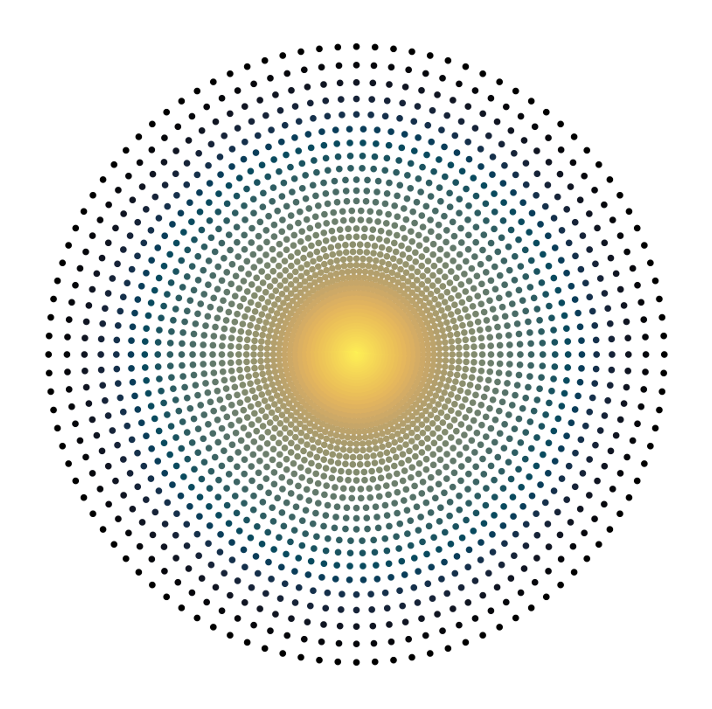
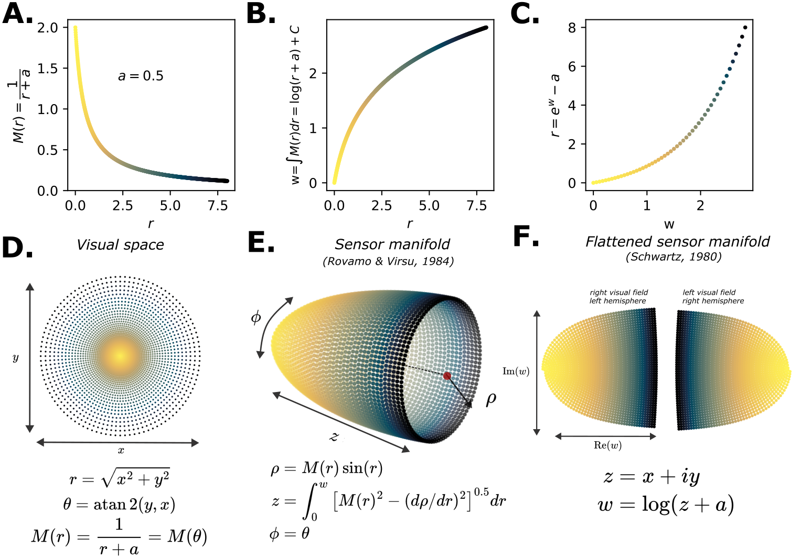
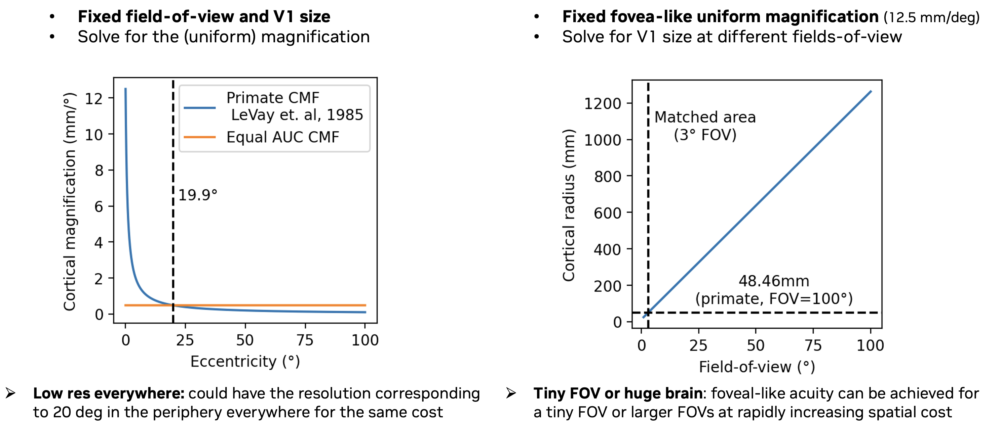
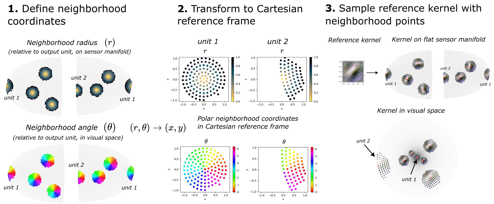
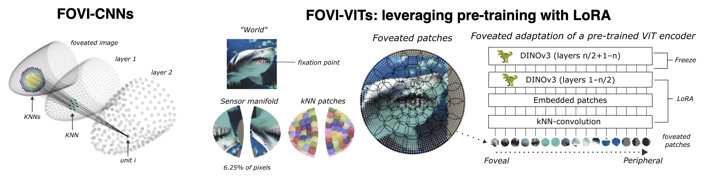
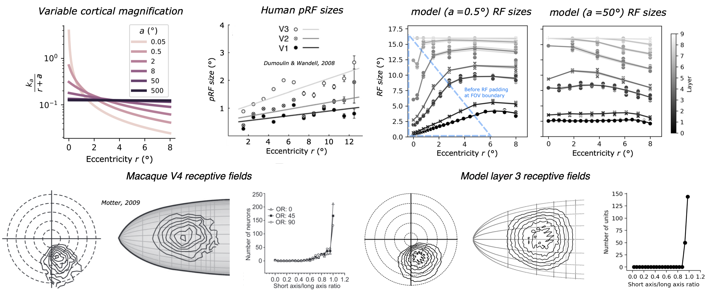
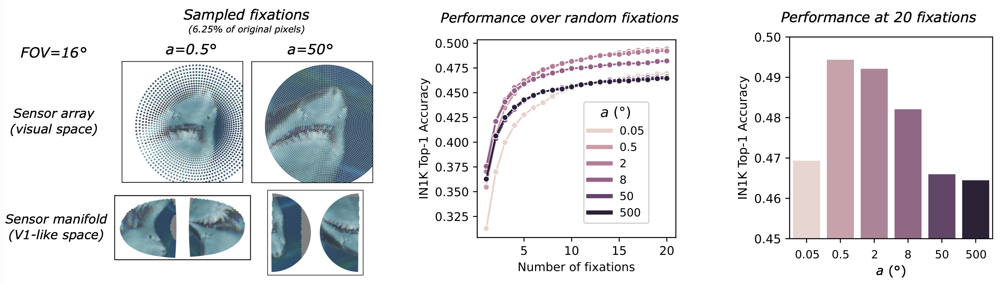
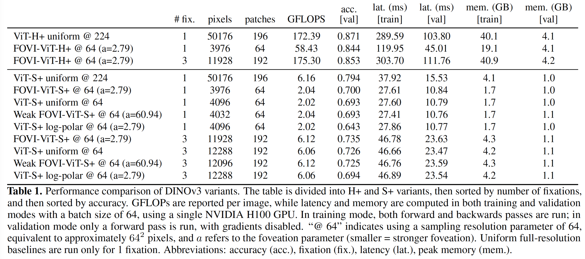
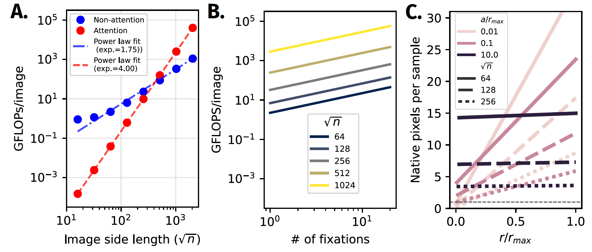

From retina-like samples to a V1-like manifold
FOVI starts with a non-uniform sensor array: high sampling density at the center of gaze and fewer samples with increasing eccentricity. The key step is to reformat that array into a uniformly dense, curved sensor manifold, which can also be flattened into a V1-like map split across visual hemifields.
The video shows how expanding the samples into a third dimension allows for non-uniform density and uniform magnification to be converted into uniform density and non-uniform magnification - the same transformation seen from the retina to V1.

The next panel gives a more detailed mathematical view of the sampler, showing how the cortical magnification function defines the visual samples, the native 3D manifold, and its flattened visualization. This 3D manifold uniquely defines a foveated representation that varies only with eccentricity, preserving local isotropy.

Uniform high acuity has hard trade-offs
So why foveation?
One argument is based purely on efficiency. If every location in our field-of-view (FoV) had fovea-like resolution, a large FoV would require a much larger representational surface, and thus much greater processing costs.
If we fix the size of V1 as a proxy for resource constraints and use uniform sampling, we could either lower resolution to keep the full FoV (equivalent to 20 deg peripheral resolution), preserve high resolution over only a tiny field of view (only 3 degrees), or do some combination.
Foveation is a different solution to this trade-off, where graded resolution can allow for both very high peak resolution, and a very large field-of-view, without blowing up the costs.

Each fixation samples a different high-resolution glimpse
A fixation selects where the high-resolution part of the sensor lands. Scroll through the sequence to see the source image, the foveated sample in visual space, the same sample on the 3D manifold, and the flattened V1-like view. Drag and scroll on the 3D panel to explore the manifold.
kNN-convolution allows for foveated perception
To perform convolutional processing on the manifold -- needed by both CNNs and ViTs (patch embedding) -- we define spatial receptive fields as k-nearest-neighborhoods on the sensor manifold. We perform kNN convolution via kernel mapping, which aligns each irregular neighborhood to a common Cartesian reference kernel, so a learned filter can be shared across the manifold. The result of this is that the same filter spans a small space in the fovea, and a larger space in the periphery.

The same interface supports CNNs and ViTs
In a FOVI-CNN, kNN-convolutions build a hierarchy directly on the manifold. In a FOVI-ViT, kNN-convolution acts as a foveated patch embedding, allowing a pretrained transformer to receive foveated patches while the rest of the encoder is architecturally unchanged. This allows us to benefit from the pre-trained knowledge of a ViT like DINOv3, while adapting it for foveation.

Biological receptive field structure falls out naturally
Because neighborhoods are isotropic on the V1-like manifold, receptive fields grow with eccentricity in visual space, while the local isotropy prevents the eccentricity-dependent warping seen in log-polar and warped Cartesian approaches for foveation. FOVI-CNNs thus produce receptive field size and shape trends highly similar to primate visual cortex.

Moderate foveation improves recognition under a pixel budget
The cortical magnification function (CMF) hyperparameter a allows us to sweep from fully uniform to heavily foveated perception, with the same sensor resources. With a fixed constrained sensing budget, we find that ImageNet-100 classification improves with more fixations, while an intermediate foveation level outperforms both very strong foveation and nearly uniform sampling.

Foveated patchification adapts pretrained transformers
With LoRA adaptation to convert pre-trained DINOv3 models into lower-res foveated variants with a kNN-convolution patch embedding, the resulting models retain much of the full-resolution model's ImageNet accuracy while using far fewer sampled pixels and patches, less FLOPS, and lower latency.

Foveation matters most as resolution grows
Transformer attention becomes especially expensive at high image resolutions. FOVI keeps high acuity where it is needed for a fixation while limiting the number of sampled pixels and patches, making active high-resolution sensing more practical. This area remains to be explored in future work.
